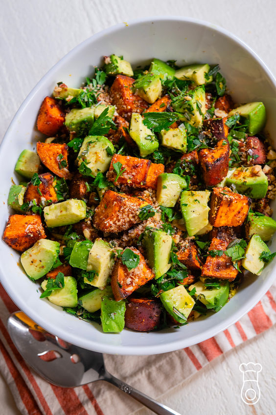

Gezonde Recepten
Quinoa Salade met Groenten

Een lichte en voedzame quinoa salade, perfect voor de lunch.
- 1 kopje quinoa
- 1 rode paprika, in blokjes
- 1 komkommer, in blokjes
- 1 avocado, in blokjes
- Verse peterselie
- Citroensap en olijfolie
Bereiding: Kook de quinoa volgens de aanwijzingen op de verpakking. Laat de quinoa daarna afkoelen. Snijd ondertussen de groenten (paprika, komkommer, avocado) in blokjes. Meng de quinoa met de gesneden groenten in een grote kom. Voeg de verse peterselie, citroensap en olijfolie toe en meng goed door. Breng op smaak met zout en peper. Serveer direct of laat het een paar uur in de koelkast staan voor een koude salade.
Avocado Toast met Ei

Een eenvoudig, maar voedzaam ontbijt dat lang energie geeft.
- 2 sneetjes volkorenbrood
- 1 rijpe avocado, geprakt
- 1 gekookt ei, in plakjes
- Peper en zout naar smaak
Bereiding: Rooster de sneetjes volkorenbrood in een broodrooster of in een pan. Terwijl het brood roostert, verhit je een pan op middelhoog vuur en bak je de eieren naar wens (spiegel ei of roerei). Besmeer het geroosterde brood met de geprakte avocado. Leg vervolgens het gebakken ei bovenop de avocado toast. Breng op smaak met peper, zout, en eventueel een beetje chilivlokken voor extra pit. Serveer direct!
Groene Smoothie met Spinazie en Banaan
Een verfrissende groene smoothie, ideaal als gezond ontbijt of snack.
- 1 handje verse spinazie
- 1 rijpe banaan
- 1 kopje ongezoete amandelmelk
- 1 theelepel chiazaad
- Optioneel: ijsblokjes voor een koude smoothie
Bereiding: Doe alle ingrediënten in een blender en mix tot een gladde massa. Geniet direct!
Kikkererwten Wraps met Groenten
Een smakelijke en vezelrijke wrap met kikkererwten en verse groenten.
- 1 volkoren wrap
- 1/2 kopje kikkererwten, gekookt
- 1/4 komkommer, in dunne plakjes
- 1/2 paprika, in reepjes
- Handje verse spinazie
- 1 eetlepel hummus
- Peper en zout naar smaak
Bereiding: Besmeer de wrap met hummus, voeg kikkererwten en groenten toe, rol op en geniet!
Courgette Spaghetti met Tomatensaus
Een heerlijke en koolhydraatarme spaghetti gemaakt van courgette.
- 2 middelgrote courgettes
- 1 kopje tomatensaus (bij voorkeur zelfgemaakt of zonder suiker)
- 1 teentje knoflook, fijngehakt
- 1 eetlepel olijfolie
- Verse basilicum voor garnering
- Zout en peper naar smaak
Bereiding: Snijd de courgettes in dunne slierten (spaghetti-vorm) met een spiraalsnijder. Verhit olijfolie in een pan, voeg knoflook toe en bak kort. Voeg tomatensaus en courgette toe, roer door en verwarm enkele minuten. Garneer met basilicum en serveer direct.
Geroosterde Zoete Aardappel met Avocado en Salsa

Een gezonde en smaakvolle maaltijd, rijk aan vezels en goede vetten.
- 1 grote zoete aardappel, in de lengte gehalveerd
- 1 avocado, in plakjes
- 1/2 kopje cherrytomaatjes, gehalveerd
- 1/4 rode ui, fijngehakt
- Verse koriander voor garnering
- 1 eetlepel olijfolie
- Peper en zout naar smaak
Bereiding: Verwarm de oven voor op 200°C. Bestrijk de zoete aardappelhelften met olijfolie en rooster ze 25-30 minuten, of tot ze zacht zijn. Meng ondertussen de tomaatjes, rode ui, en koriander voor de salsa. Serveer de geroosterde aardappel met plakjes avocado en salsa erbovenop. Breng op smaak met peper en zout.